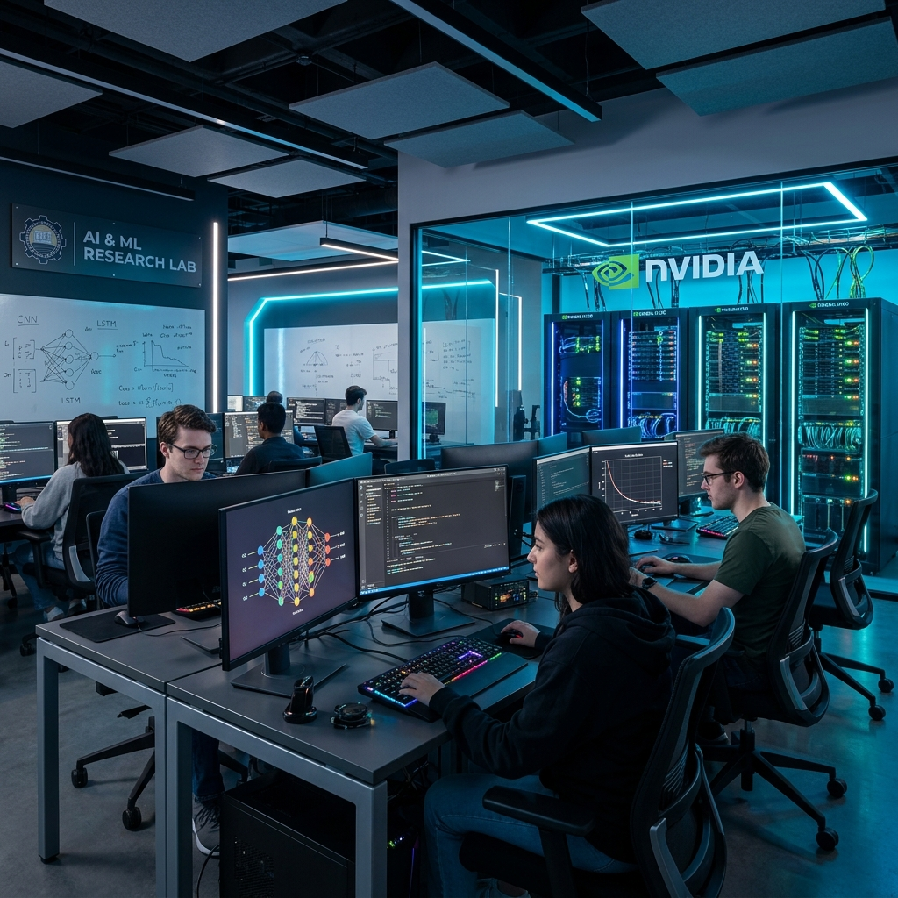
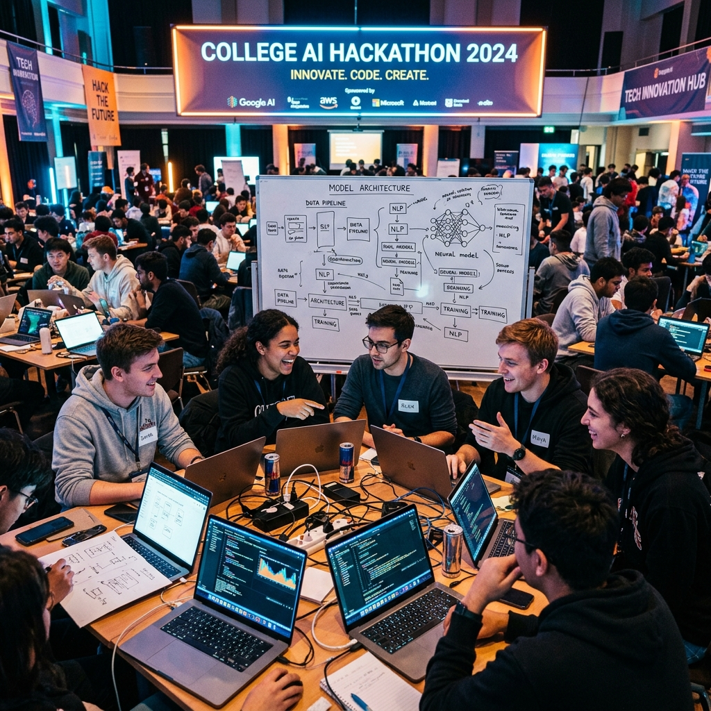
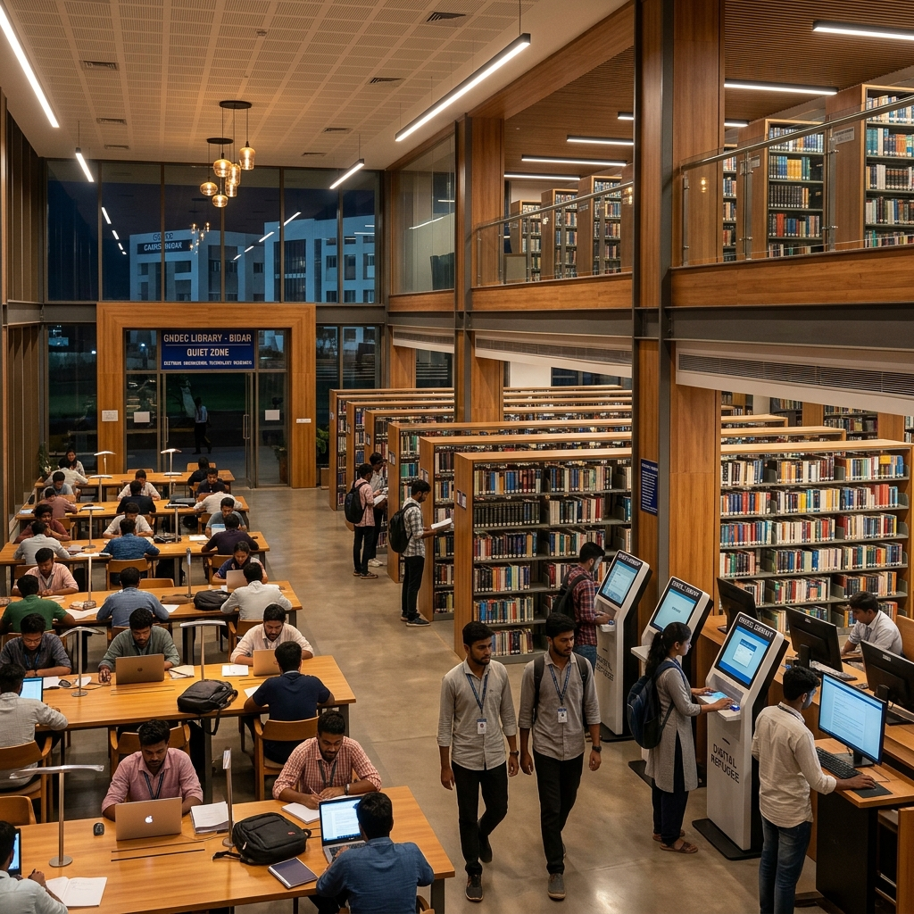

Redefining engineering through data-driven architectural excellence and autonomous innovation.
A legacy of over 40 years in professional education, producing industry-ready professionals for the global technological landscape. Affiliated with VTU Belagavi and accredited by NBA & NAAC with A+ Grade.
Rankings
Accreditation
Designing specialized architectures for the next generation of AI developers.
Study neural networks, deep learning, and advanced computation frameworks.
Explore robotics, computer vision, and self-learning environments.
Core Platform
From predictive analytics to massive-scale data processing engines.
Live interface previews of our department's proprietary model deployments.
Self-hosted department LLM for student research and knowledge retrieval.
Generative media research for engineering design and creative visualization.
Architecting the transition from narrow AI to cognitive evolution.
The rise of Deep Learning and CNNs. Departmental research transitioned from classical heuristics to massive-scale neural training, establishing the base for modern computer vision.
The emergence of Large Language Models and Diffusion engines. We integrated real-time generative interfaces, enabling autonomous content synthesis and advanced natural language reasoning.
Architecting AGI-ready systems and decentralized intelligence. The future focuses on multi-agent collaboration, quantum-AI convergence, and emotional intelligence in autonomous agents.


Immerse yourself in our NVIDIA-powered AI Research Center. We provide the specialized hardware required for massive-scale deep learning experimentation.
From autonomous rovers to medical AI diagnostic tools, our students architect live solutions for world-scale challenges.
Our curriculum is synchronized with global tech giants, ensuring 96% of our graduates are deployed into high-impact roles immediately upon maturity.
Highest annual package verified for the 2024 academic cycle, with over 350+ corporate deployment invitations.
Wins
Deployment
Patents
Certs
